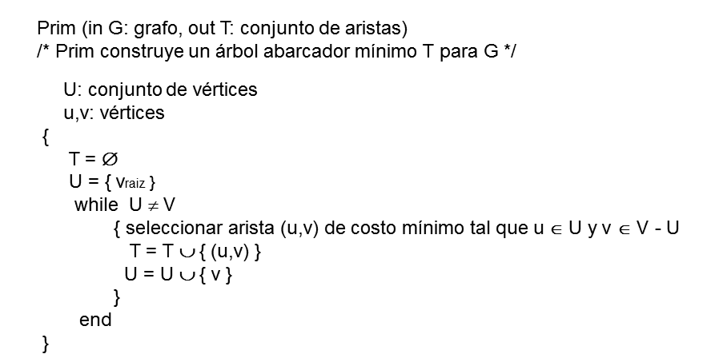
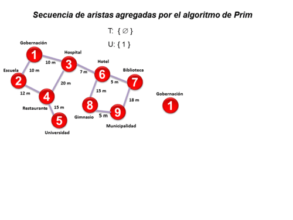

Objetivo y Descripción
Sea G = ( V , A ), donde V es el conjunto de vértices del grafo G y A es el conjunto de aristas del mismo; n es la cantidad de vértices del conjunto V y a es la cantidad de aristas del conjunto A.
El objetivo del algoritmo de Prim es construir, a partir de un grafo G no dirigido, pesado y conexo, un árbol abarcador de costo mínimo (MST del inglés Minimum Spanning Tree), es decir, encuentra un conjunto T de n-1 aristas pertenecientes al conjunto A que conectan todos los vértices del grafo; donde el costo total de todas las aristas del árbol es el menor posible.
El algoritmo de Prim comienza inicializando el conjunto T (MST resultante) en vacío y el conjunto U con un vértice de V (vraiz) que será la raíz del árbol resultante. El árbol representado por el conjunto T crece arista por arista. En cada paso del algoritmo se encuentra la arista de menor costo (u,v) que conecta U con V - U, es decir, u está en U (vértices de árbol) y v está en V - U (vértices del grafo que aún no se incorporaron al árbol) y luego se agrega v a U y la arista (u,v) a T. Este paso se repite hasta que U sea igual a V.
Veamos a continuación un resumen del algoritmo:

Veamos un ejemplo de la construcción del MST:
